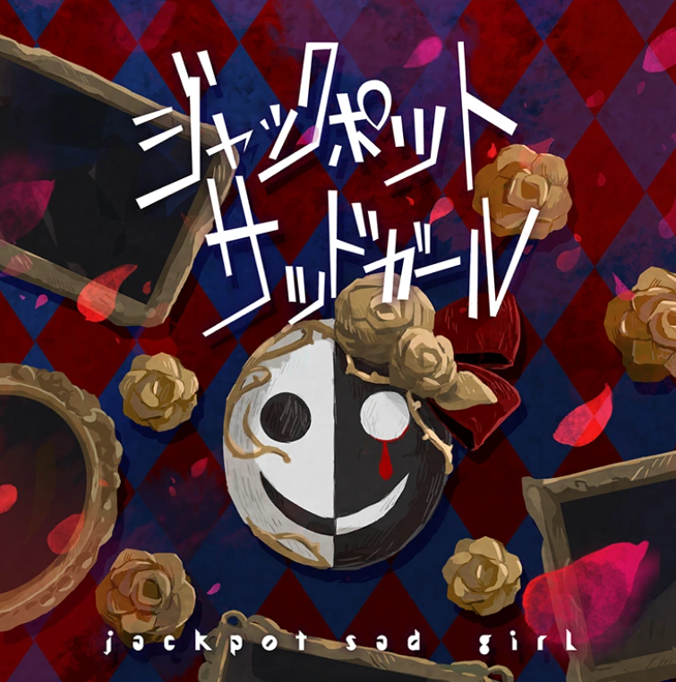
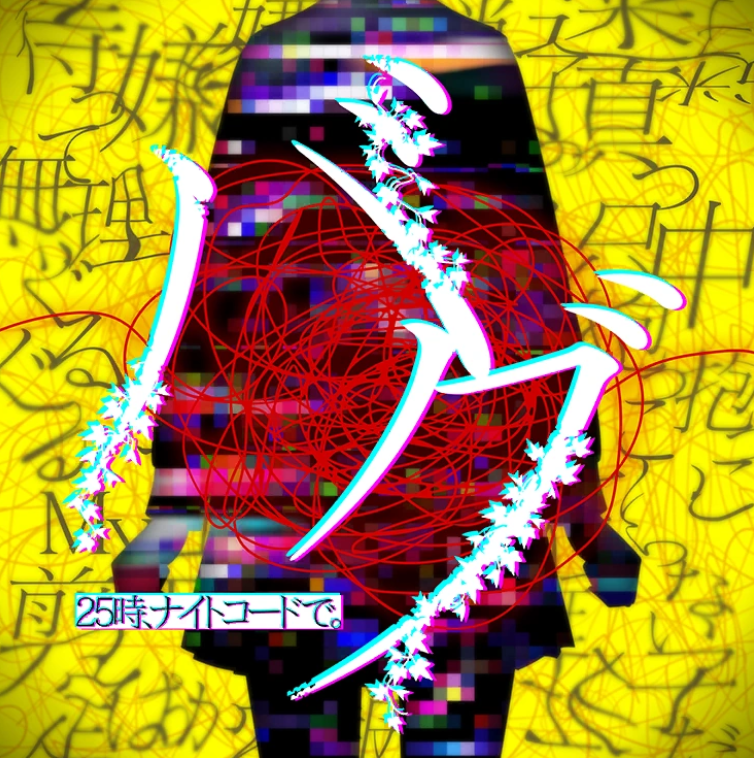
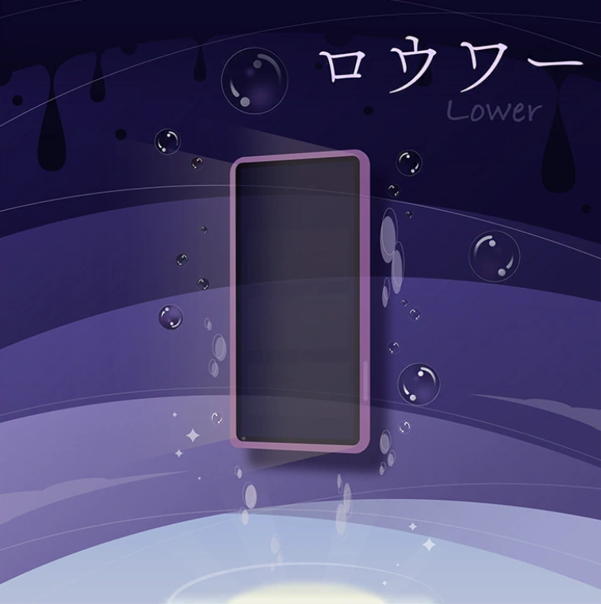
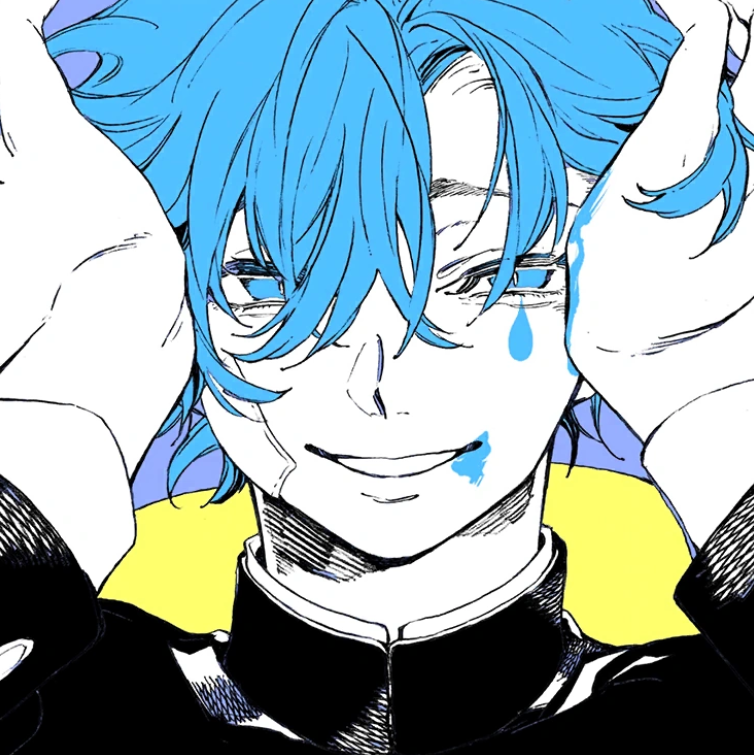
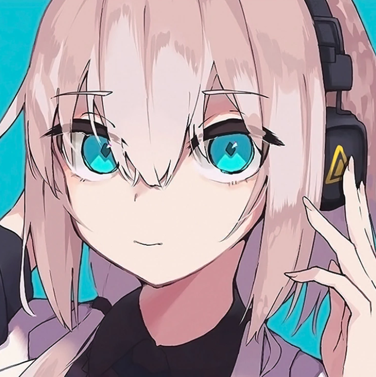
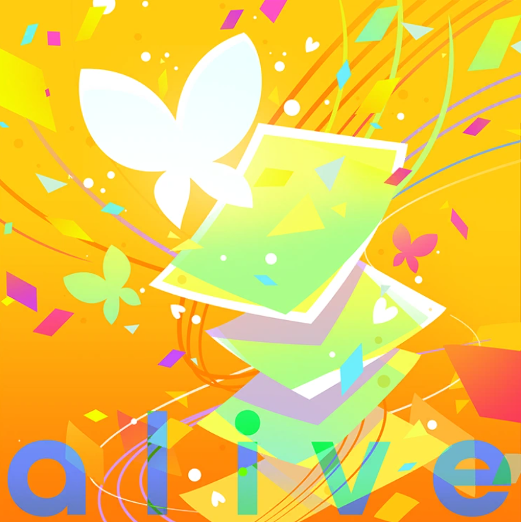
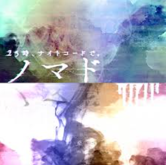

Music Gallery
Explore the haunting melodies of Nightcord at 25:00

Jackpot Sad Girl
A melancholic masterpiece about hiding pain behind a smile

Bug
Digital distortion meets emotional chaos in this glitchy anthem

Lower
Diving deeper into the abyss of feelings and despair

IDSMILE
The facade of happiness hiding true emotions

Villains' Night
Embracing the darkness within and being misunderstood

Phony
Questioning authenticity in a fake world

Marshal Maximizer
A haunting cover about observation and judgment

Alive
Finding the will to keep going despite overwhelming darkness

Nomad
A circus-like melody hiding deep loneliness